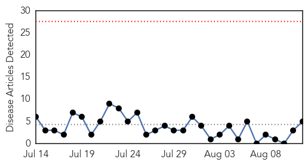
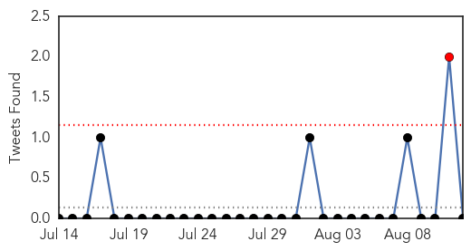

Influenza
30-Day Web Trend
0 alerts, 0 warnings

30-Day Twitter Trend
1 alerts, 0 warnings

Article Locations
Article Confidences

Top Articles:
Top Tweets:
- 0.665
- RT: Is it 'man flu'? Is it 'woman flu'? The lowdown on influenza http://t.co/QnOaOkwYe0
- 0.655
- Is it 'man flu'? Is it 'woman flu'? The lowdown on influenza http://t.co/mvCn9eieHr via fluishere
- 0.655
- Is it 'man flu'? Is it 'woman flu'? The lowdown on influenza http://t.co/WD0qeBAoW7 via
Cholera
30-Day Web Trend
5 alerts, 2 warnings
30-Day Twitter Trend
6 alerts, 0 warnings

Article Locations

Article Confidences

Top Articles:
- 0.955
- More than 3,000 cholera cases recorded in Accra alone since July
- 0.942
- Ghana, Business Advice, Jobs, News, Business Directory, Real Estate, Finance, Forms, Auto
- 0.906
- Cholera epidemic in Cameroon
- 0.863
- Red Cross revises its emergency appeal to assist 450,000 affected by conflict in South Sudan - South Sudan
- 0.739
- Ghaianas Asked To Take Advantage Of Medical Call Centre
Top Tweets:
- 0.864
- Fantastic piece by, on how another novel disease outbreak--cholera in Haiti--spiralled out of control http://t.co/NrRX6XCiqV
- 0.771
- Lessons for Ebola? Cholera in Haiti not controlled despite plenty of NGOs + availability of cheap easy treatment. http://t.co/NrRX6XCiqV